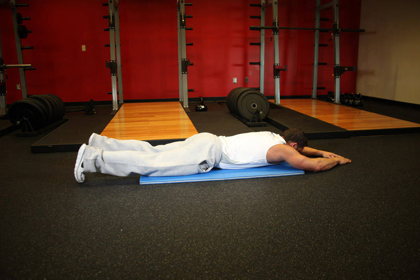

A RAG system over 873 gym exercises: ask for "a good bodyweight leg exercise" and get an answer that only uses exercises that exist. I kept it small on purpose, to learn how the parts of an ML system fit together.
Each of the 873 exercises has two photos and a small record. The feature pipeline flattens the record into one string, and that string is what gets embedded.

→ text for the embedder
Superman . static . beginner . compound . body only . lower back . glutes, hamstrings . stretching . To begin, lie straight and face down on the floor or exercise mat. Your arms should be fully extended in front of you…
From the public-domain exercises.json dataset.
The metadata (muscles, equipment, level) is what made a labelled eval set possible without hand-labelling anything.
Three pipelines that only talk through what they store (the FTI pattern). Hover or tap the numbers for tips.
src/One YAML per run, checked by Pydantic, so every run can be repeated.search(vector, top_k).Splitting the code this way made each part swappable: a new embedder, backend or LLM is one config change.
| Training | Inference | |
|---|---|---|
| Runs | Offline, when the model changes | On every query |
| Cares about | Throughput, reproducibility | Latency, consistent answers |
| Fails by | Overfitting to the eval set | Using a different model than the index |
The only thing they share is a model version, and that's exactly what has to match.
The dataset has images, so I started with CLIP. But CLIP is trained to match an image with its caption, not text with text.
Recall@10 on text queries: about 10× apart.
Pick the embedder for the query, not the data. My users type text, so a text model wins.
Normalize the vectors and cosine, dot product and Euclidean distance give the same ranking.
Dense search barely beat BM25: short queries like "hamstrings" or "kettlebell" are keyword search's home turf. Combining both with Reciprocal Rank Fusion beat either one.
score(doc) = Σ 1 / (60 + rank) · illustrative example
| System | Recall@10 | nDCG@10 | MRR | MAP@10 |
|---|---|---|---|---|
| BM25 | 0.348 | 0.614 | 0.528 | 0.274 |
| Dense (Sentence-Transformers) | 0.356 | 0.665 | 0.620 | 0.317 |
| Dense (CLIP text) | 0.033 | 0.080 | 0.051 | 0.016 |
| Hybrid RRF (BM25 + Sentence) | 0.408 | 0.707 | 0.670 | 0.354 |
| Hybrid RRF (BM25 + CLIP) | 0.241 | 0.547 | 0.508 | 0.153 |
Fuse ranks, not scores (BM25 and cosine use different scales), and fuse from a top-20 pool before cutting to 10.
A big jump on a templated eval set mostly means the model learned this dataset's phrasing. Real queries need real users.
log_param, results in log_metric, so runs line up in one sortable table.with mlflow.start_run(): block, and a local SQLite file is enough to start.A tracking server only matters once other people need to see the runs.
Milvus Lite is the full Milvus engine in one local file, with the same API as a cluster. I also prototyped Lance, a versioned file format with no server at all.
With 873 vectors, exact search is already instant. Measure before reaching for HNSW.
Nothing here is hard at 873 rows, so I sketched the scaled version using the System Design Primer.
hash(query + model + top_k); clear it when the index changes.